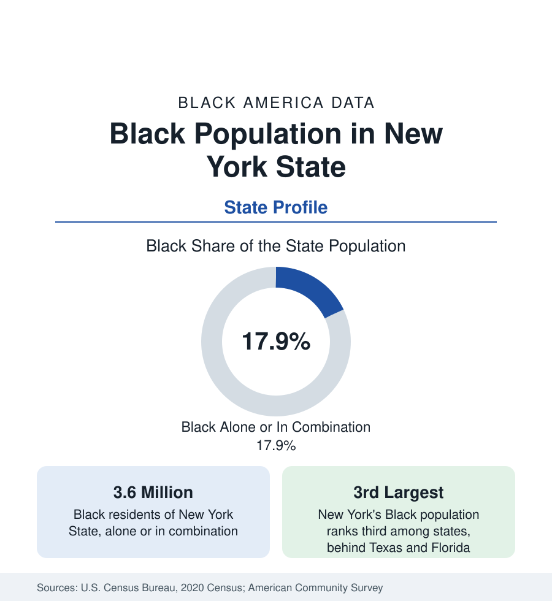

Black Census
Black Population in New York State: City, Suburbs, and Upstate
About 3.6 million Black New Yorkers — roughly 18 percent of the state — split between the great metro, its suburbs, and a chain of upstate cities. The census profile.

New York State holds about 3.6 million Black residents — Black alone or in combination — roughly 18 percent of its population, with Black alone at about three million, or 15 percent. It ranks third among states in Black population, behind Texas and Florida. But the state figure conceals the sharpest internal division in this series: more than half of Black New Yorkers live in New York City, most of the rest in its suburbs and in a chain of mid-sized upstate cities, and the rural balance of the state records Black shares in the low single digits. This article profiles the population at the state scale; the city itself is profiled in the cities section.
The Downstate Majority
New York City's roughly two million Black residents — profiled in full in the cities section — form the core of the state total, and the surrounding suburban counties hold much of the rest. Nassau and Suffolk counties on Long Island contain large, long-established Black communities, some of them among the most segregated suburbs in the nation by the census dissimilarity measures, alongside newer Black suburban growth. Westchester County's cities — Mount Vernon, Yonkers, New Rochelle — record Black populations of metropolitan character just north of the Bronx. Across the Hudson, the New Jersey suburbs belong to the same metropolitan population but to another state's census account, a boundary the reader of state profiles should keep in mind: a substantial share of the New York metro's Black population is invisible in New York State's total.
The Upstate Chain
Upstate New York's Black population concentrates in its industrial-era cities, each of which drew Great Migration arrivals to factory and railroad work and each of which now records a Black share far above the state figure. Buffalo, the state's second city, is more than a third Black. Rochester records a Black share near 40 percent — among the highest of any mid-sized American city — and Syracuse near 30 percent. Albany and the Capital District, Utica, Binghamton, and the Hudson Valley cities of Poughkeepsie, Newburgh, and Kingston complete the chain. These cities share the data signature of the northern industrial belt: Black populations established by migration, then reshaped by deindustrialization, with poverty rates above the state figure and, in Rochester and Buffalo, Black child poverty rates that rank among the highest measured in the nation — figures documented in the state tables of this section.
Composition: The Most International Black Population
No state's Black population is as international as New York's. The foreign-born share approaches a third statewide and exceeds it in the city, with the Caribbean — Jamaica, Haiti, Trinidad and Tobago, Guyana, the Dominican Republic — supplying the largest streams and West Africa the fastest-growing. The ancestry data record the consequence: a Black population in which Southern-descended, Caribbean, and African communities are all present at large scale, with distinct languages, religions, and settlement geographies layered across the same boroughs and suburbs. State-level averages for income and attainment blend these streams and should be read with the birthplace splits this section applies in the city's profile and in the national foreign-born article.
Movement
New York presents the series' clearest case of simultaneous arrival and departure. International immigration continues to add Black residents at scale, and the state's universities and professional economy draw Black migrants from across the country — while domestic out-migration, principally to Florida, Georgia, and the Carolinas, removes more. The estimates program has recorded a slowly declining state Black population in recent years on net, even as Texas, Florida, and Georgia post large gains: the arithmetic of the New Great Migration, working on the state that was the old migration's greatest destination.
Reading the New York Numbers
Three disciplines apply. Keep the state, city, and metro totals separate — they answer different questions and differ by millions. Apply the birthplace split before quoting any average. And read the upstate cities on their own terms rather than as a residue of the downstate total: their Black populations, shares, and conditions form a distinct subject, closer in pattern to the Midwest's industrial cities than to the metropolis six hours south. The county profiles accompanying this state account carry the detail for each.
More in Black Census
The Black Population of the United States: Size, Definitions, and Distribution
The Black population of the United States totals 52.8 million — 15.4 percent of the nation. How the Census Bureau defines and counts the population, and where it lives.
Black Median Household Income in the United States
Black median household income stands at $56,490 in the Census Bureau's annual income report — how the figure is measured, how it compares, and what drives it.
The Black Poverty Rate: Levels, Children, and the Long Trend
The official Black poverty rate is 17.1 percent — against 11.1 percent nationally and 7.7 percent for non-Hispanic White Americans. How poverty is measured and what the data show.
Source: U.S. Census Bureau, 2020 Census; American Community Survey; Population Estimates Program.